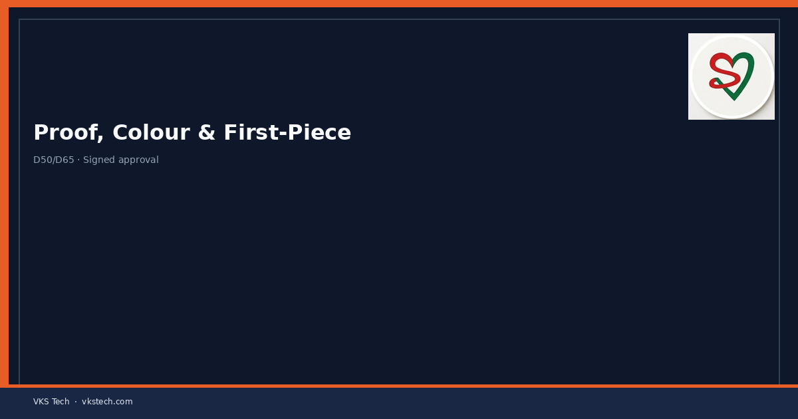
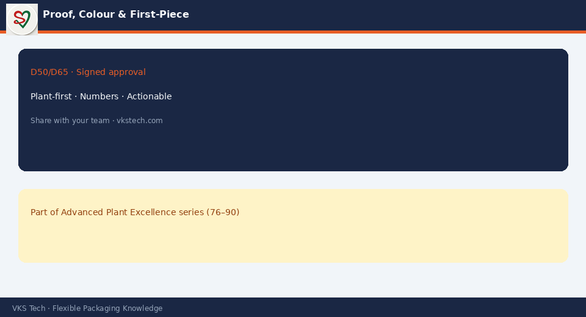

🎯 First-Piece Approval Under Shop Light Is How Plants Create Customer Disputes Months Later.
📖 9-min read · Colour · QC
Use agreed proof or standard, D50/D65 as specified, measured Delta E where required, and a signed first-piece with batch reference. “Looks OK to me” is not a control system.
📌 First-Piece Discipline
- Correct light source
- Master / proof present
- Registration within tolerance
- Signed record linked to job

💡 Line: If the first piece is not under standard light, you did not approve colour — you hoped.
🎯 शॉप लाइट में फर्स्ट-पीस अप्रूवल बाद में कस्टमर विवाद बनाता है।
📖 9-मिनट पढ़ें
💡 लाइन: स्टैंडर्ड लाइट के बिना फर्स्ट पीस = रंग की आशा, नियंत्रण नहीं।